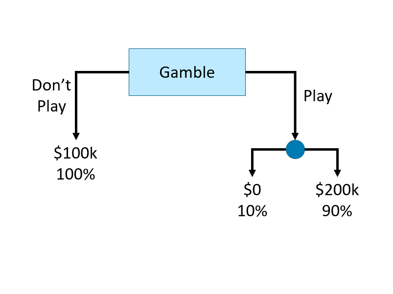
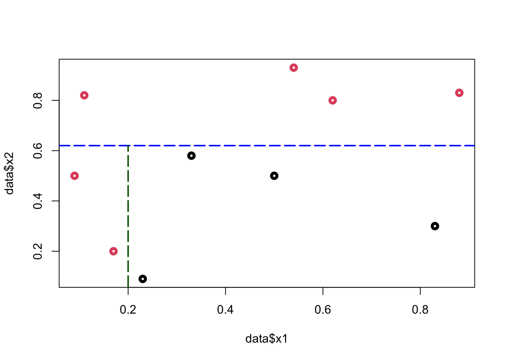
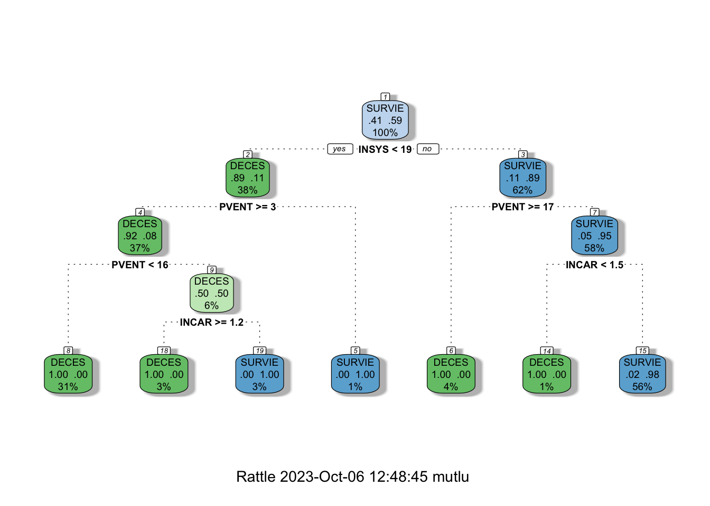
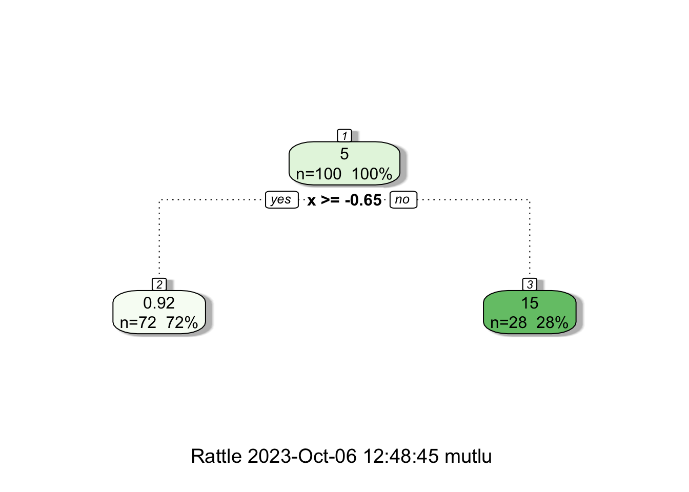
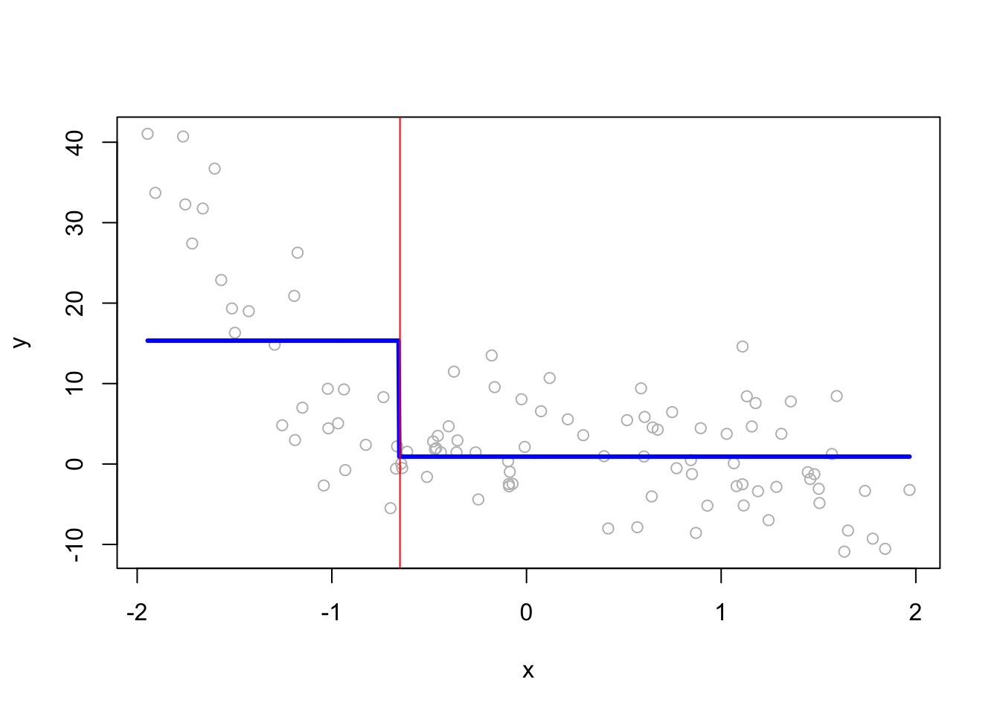
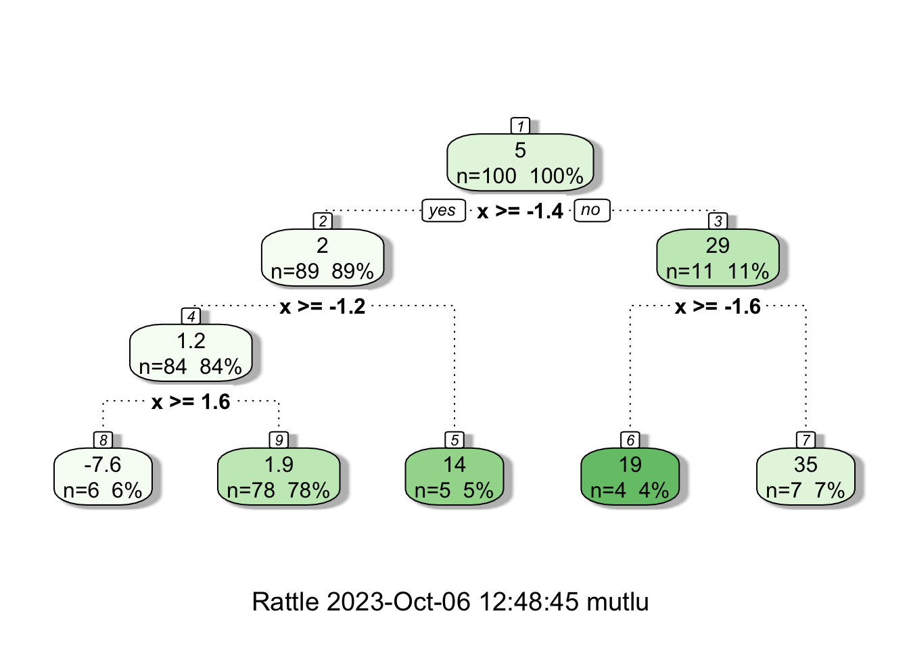

Chapter 16 Regression Trees
Tree-based predictive models are one of the best and most used supervised learning methods. Unlike linear models, they handle non-linear relationships quite well. They can be applied for both classification or regression problems, which aspires its name: Classification And Regression Trees.
The foundation of their models is based on a decision tree, which is a flowchart where each internal node represents a decision point (goes left or right), each branch represents those decisions, and each leaf at the end of a branch represents the outcome of the decision. Here is a simple decision tree about a gamble:

How can we use a decision tree in a learning algorithm? Let’s start with a classification problem:
16.1 CART - Classification Tree
Let’s start with a very simple example: suppose we have the following data:
y <- c(1, 1, 1, 0, 0, 0, 1, 1, 0, 1)
x1 <- c(0.09, 0.11, 0.17, 0.23, 0.33, 0.5, 0.54, 0.62, 0.83, 0.88)
x2 <- c(0.5, 0.82, 0.2, 0.09, 0.58, 0.5, 0.93, 0.8, 0.3, 0.83)
data <- data.frame(y = y, x1 = x1, x2 = x2)
plot(
data$x1,
data$x2,
col = (data$y + 1),
lwd = 4,
ylab = "x2",
xlab = "x1"
)What’s the best rule on \(x_2\) to classify black (\(0\)) and red balls (\(1\))? Find a cutoff point on \(x_2\) such that the maximum number of observations is correctly classified
To minimize the misclassification, we find that the cutoff point should be between \(\{0.6: 0.79\}\). Hence the rule is \(x_2 < k\), where \(k \in\{0.6: 0.79\}.\)
plot(data$x1, data$x2, col = (data$y + 1), lwd = 4)
abline(h = 0.62,
col = "blue",
lty = 5,
lwd = 2)
From this simple rule, we have two misclassified balls. We can add a new rule in the area below the horizontal blue line:
plot(data$x1, data$x2, col = (data$y + 1), lwd = 4)
abline(
h = 0.62,
col = c("blue", "darkgreen"),
lty = 5,
lwd = 2
)
segments(
x0 = 0.2,
y0 = 0,
x1 = 0.2,
y1 = 0.62,
col = "darkgreen",
lty = 5,
lwd = 2
)

Using these two rules, we correctly classified all balls (\(Y\)). We did the classification manually by looking at the graph. How can we do it by an algorithm?
First, we need to create an index that is going to measure the impurity in each node. Instead of counting misclassified \(y\)’s, the impurity index will give us a continuous metric. The first index is the Gini Index, which can be defined at some node \(\mathcal{N}\):
\[ G(\mathcal{N}) = \sum_{k=1}^{K} p_{k}\left(1-p_{k}\right) = 1-\sum_{k=1}^{K} p_{k}^{2} \] where, with \(p_k\) is the fraction of items labeled with class \(k\) in the node. If we have a binary outcome \((k=2)\), when \(p_k \in \{0, 1\}\), \(G(\mathcal{N})=0\) and when \(p_k = 0.5,\) \(G(\mathcal{N})=0.25\). The former implies the minimal impurity (diversity), the latter shows the maximal impurity. A small \(G\) means that a node contains observations predominantly from a single class. As in the previous example, when we have a binary outcome with two classes, \(y_i \in \{0, 1\}\), this index can be written as:
\[ G(\mathcal{N})=\sum_{k=1}^{2} p_{k}\left(1-p_{k}\right)=2p\left(1-p\right) \]
If we split the node into two leaves, \(\mathcal{N}_L\) (left) and \(\mathcal{N}_R\) (right), the \(G\) will be:
\[ G\left(\mathcal{N}_{L}, \mathcal{N}_{R}\right)=p_{L} G\left(\mathcal{N}_{L}\right)+p_{R} G\left(\mathcal{N}_{R}\right) \]
Where \(p_L\), \(p_R\) are the proportion of observations in \(\mathcal{N}_L\) and \(\mathcal{N}_R\).
Remember, we are trying to find the rule that gives us the best cutoff point (split). Now we can write the rule:
\[ \Delta=G(\mathcal{N})-G\left(\mathcal{N}_{L}, \mathcal{N}_{R}\right)>\epsilon \]
When the impurity is reduced substantially, the difference will be some positive number (\(\epsilon\)). Hence, we find the cutoff point on a single variable that minimizes the impurity (maximizes \(\Delta\)).
Let’s use a dataset5, which reports about heart attacks and fatality (our binary variable).
library(readr)
#Data
#myocarde = read.table("http://freakonometrics.free.fr/myocarde.csv",head=TRUE, sep=";")
myocarde <- read_delim(
"myocarde.csv",
delim = ";" ,
escape_double = FALSE,
trim_ws = TRUE,
show_col_types = FALSE
)
myocarde <- data.frame(myocarde)
str(myocarde)## 'data.frame': 71 obs. of 8 variables:
## $ FRCAR: num 90 90 120 82 80 80 94 80 78 100 ...
## $ INCAR: num 1.71 1.68 1.4 1.79 1.58 1.13 2.04 1.19 2.16 2.28 ...
## $ INSYS: num 19 18.7 11.7 21.8 19.7 14.1 21.7 14.9 27.7 22.8 ...
## $ PRDIA: num 16 24 23 14 21 18 23 16 15 16 ...
## $ PAPUL: num 19.5 31 29 17.5 28 23.5 27 21 20.5 23 ...
## $ PVENT: num 16 14 8 10 18.5 9 10 16.5 11.5 4 ...
## $ REPUL: num 912 1476 1657 782 1418 ...
## $ PRONO: chr "SURVIE" "DECES" "DECES" "SURVIE" ...The variable definitions are as follows: FRCAR (heart rate), INCAR (heart index), INSYS (stroke index), PRDIA (diastolic pressure), PAPUL (pulmonary arterial pressure), PVENT (ventricular pressure), REPUL (lung resistance), PRONO, which is our outcome variable (death “DECES”, survival “SURVIE”). We are ready to calculate \(G\)-index:
# Recode PRONO
y <- ifelse(myocarde$PRONO == "SURVIE", 1, 0)
# Find G(N) without L and R
G <- 2 * mean(y) * (1 - mean(y))
G## [1] 0.4832375This is the level of “impurity” in our data. Now, we need to pick one variable and find a cutoff point in the variable. Then, we will calculate the same \(G\) for both left and right of that point. The goal is the find the best cutoff point that reduces the “impurity”. Let’s pick FRCAR arbitrarily for now. Later we will see how to find the variable that the first split (left and right) should start from so that the reduction in “impurity” will be maximized.
## x_1
## y 60 61 65 67 70 75 78 79 80 81 82 84 85 86 87 90 92 94 95 96 99 100 102 103
## 0 1 0 1 0 1 1 0 1 4 0 0 0 1 0 2 2 2 1 3 0 0 1 1 1
## 1 0 2 1 1 0 3 1 0 7 1 3 1 0 4 0 4 2 1 1 1 1 3 0 0
## x_1
## y 105 108 110 116 118 120 122 125
## 0 1 0 2 1 1 1 0 0
## 1 0 1 1 0 1 0 1 1We are ready to calculate
\[ G\left(\mathcal{N}_{L}, \mathcal{N}_{R}\right)=p_{L} G\left(\mathcal{N}_{L}\right)+p_{R} G\left(\mathcal{N}_{R}\right), \] when \(x = 60\), for example.
# x = 60, for example to see if (GL + GR > GN)
GL <- 2 * mean(y[x_1 <= 60]) * (1 - mean(y[x_1 <= 60]))
GR <- 2 * mean(y[x_1 > 60]) * (1 - mean(y[x_1 > 60]))
pL <- length(x_1[x_1 <= 60]) / length(x_1) #Proportion of obs. on Left
pR <- length(x_1[x_1 > 60]) / length(x_1) #Proportion of obs. on RightHow much did we improve \(G\)?
## [1] 0.009998016We need to go trough each number on \(x_1\) and identify the point that maximizes delta. A function can do that:
GI <- function(x) {
GL <- 2 * mean(y[x_1 <= x]) * (1 - mean(y[x_1 <= x]))
GR <- 2 * mean(y[x_1 > x]) * (1 - mean(y[x_1 > x]))
pL <- length(x_1[x_1 <= x]) / length(x_1)
pR <- length(x_1[x_1 > x]) / length(x_1)
del = G - pL * GL - pR * GR
return(del)
}
# Let's test it
GI(60)## [1] 0.009998016It works! Now, we can use this function in a loop that goes over each unique \(x\) and calculate their delta.
xm <- sort(unique(x_1))
delta <- c()
# Since we don't split at the last number
for (i in 1:length(xm) - 1) {
delta[i] <- GI(xm[i])
}
delta## [1] 9.998016e-03 4.978782e-04 1.082036e-05 1.041714e-03 8.855953e-05
## [6] 7.363859e-04 2.295303e-03 2.546756e-04 1.142757e-03 2.551599e-03
## [11] 9.862318e-03 1.329134e-02 8.257492e-03 2.402430e-02 1.160767e-02
## [16] 1.634414e-02 1.352527e-02 1.229951e-02 3.109723e-03 5.692941e-03
## [21] 9.212475e-03 1.919591e-02 1.244092e-02 6.882353e-03 2.747959e-03
## [26] 6.282533e-03 1.547312e-03 1.082036e-05 4.978782e-04 9.671419e-03
## [31] 4.766628e-03Let’s see the cutoff point that gives us the highest delta.
## [1] 0.0240243## [1] 86Although this is a simple and an imperfect algorithm, it shows us how we can build a learning system based on a decision tree. On one variable, FRCAR, and with only one split we improved the Gini index by 2.5%. Obviously this is not good enough. Can we do more splitting?
Since we now have two nodes (Left and Right at \(x_1 = 86\)), we can consider each of them as one node and apply the same formula to both left and right nodes. As you can guess, this may give us a zero-\(G\), as we end up with splitting at every \(x_{1i}\). We can prevent this overfitting by pruning, which we will see later.
Wouldn’t it be a good idea if we check all seven variables and start with the one that has a significant improvements in delta when we split? We can do it easily with a loop:
# Adjust our function a little: add "tr", the cutoff
GI <- function(x, tr) {
G <- 2 * mean(y) * (1 - mean(y))
GL <- 2 * mean(y[x <= tr]) * (1 - mean(y[x <= tr]))
GR <- 2 * mean(y[x > tr]) * (1 - mean(y[x > tr]))
pL <- length(x[x <= tr]) / length(x)
pR <- length(x[x > tr]) / length(x)
del = G - pL * GL - pR * GR
return(del)
}
# The loop that applies GI on every x
d <- myocarde[, 1:7]
split <- c()
maxdelta <- c()
for (j in 1:ncol(d)) {
xm <- sort(unique(d[, j]))
delta <- c()
for (i in 1:length(xm) - 1) {
delta[i] <- GI(d[, j], xm[i])
}
maxdelta[j] <- max(delta)
split[j] <- xm[which.max(delta)]
}
data.frame(variables = colnames(d), delta = maxdelta)## variables delta
## 1 FRCAR 0.02402430
## 2 INCAR 0.26219024
## 3 INSYS 0.28328013
## 4 PRDIA 0.13184706
## 5 PAPUL 0.09890283
## 6 PVENT 0.04612125
## 7 REPUL 0.26790701This is good. We can identify that INSYS should be our first variable to split, as it has the highest delta.
## [1] 19We now know where to split on INSYS, which is 19. After splitting INSYS left and right, we move on to the next variable to split, which would be the second best: REBUL.
For a better interpretability, we can rank the importance of each variable by their gain in Gini. We can approximately order them by looking at our delta:
dm <- matrix(maxdelta, 7, 1)
rownames(dm) <- c(names(myocarde[1:7]))
dm <- dm[order(dm[, 1]), ]
barplot(
dm,
horiz = TRUE,
col = "darkgreen",
xlim = c(0, 0.3),
cex.names = 0.5,
cex.axis = 0.8,
main = "Variable Importance at the 1st Split"
)The package rpart (Recursive PARTitioning) implements all these steps that we experimented above.
16.2 rpart - Recursive Partitioning
As in our case, when the response variable is categorical, the resulting tree is called classification tree. The default criterion, which is maximized in each split is the Gini coefficient. The method-argument can be switched according to the type of the response variable. It is class for categorical, anova for numerical, poisson for count data and exp for survival data. If the outcome variable is a factor variable, as in our case, we do not have to specify the method.
The tree is built by the following process in rpart: first the single variable is found that best splits the data into two groups. After the data is separated, this process is applied separately to each sub-group. This goes on recursively until the subgroups either reach a minimum size or until no improvement can be made.
Details can be found in this vignette (Atkinson_2022?).
Here, we apply rpart to our data without any modification to its default arguments:
library(rpart)
tree = rpart(PRONO ~ ., data = myocarde, method = "class")
# Plot it
library(rpart.plot) # You can use plot() but prp() is much better
prp(
tree,
type = 2,
extra = 1,
split.col = "red",
split.border.col = "blue",
box.col = "pink"
)
This shows that the left node (DECES) cannot be significantly improved by a further split on REPUL. But the right node (SURVIE) can be improved.
Note that we haven’t trained our model explicitly. There are two ways to control the growth of a tree:
- We can limit the growth of our tree by using its control parameters and by checking if the split is worth it, which is, as a default, what
rpartis doing with 10-fold cross-validation. - We can grow the tree without any limitation and then
pruneit.
Since we use the default control parameters with 10-fold CV, our first tree was grown by the first strategy. Before going further, let’s spend some time on the main arguments of rpart():
rpart(formula, data, weights, subset, na.action = na.rpart, method, model = FALSE, x = FALSE, y = TRUE, parms, control, cost, ...)
The control argument controls how the tree grows. We briefly describe its arguments based on An Introduction to Recursive Partitioning Using the RPART Routines by Atkinson et.al. (Atkinson_2000?):
rpart.control(minsplit = 20, minbucket = round(minsplit/3), cp = 0.01, maxcompete = 4, maxsurrogate = 5, usesurrogate = 2, xval = 10, surrogatestyle = 0, maxdepth = 30, ...)
minsplit: The minimum number of observations in a node for which the routine will even try to compute a split. The default is 20.minbucket: The minimum number of observations in a terminal node: This defaults tominsplit/3.cp: The threshold complexity parameter. Default is 0.01.maxcompete: The number of alternative splits in addition to the best that will be printed.maxsurrogate: The maximum number of surrogate variables to retain at each node.usesurrogate: If the value is 0, then a subject (observation) who is missing the primary split variable does not progress further down the tree.xval: The number of cross-validations to be done. Default is 10.maxdepth: The maximum depth of any node of the final tree
Remember, rpart does not drop the subject if it has a missing observation on a predictor. When the observation missing on the primary split on that variable, rpart find a surrogate for the variable so that it can carry out the split.
We can see the the growth of the tree by looking at its CV table:
##
## Classification tree:
## rpart(formula = PRONO ~ ., data = myocarde, method = "class")
##
## Variables actually used in tree construction:
## [1] INSYS REPUL
##
## Root node error: 29/71 = 0.40845
##
## n= 71
##
## CP nsplit rel error xerror xstd
## 1 0.724138 0 1.00000 1.00000 0.14282
## 2 0.034483 1 0.27586 0.62069 0.12640
## 3 0.010000 2 0.24138 0.65517 0.12863The rel error of each iteration of the tree is the fraction of mislabeled elements in the iteration relative to the fraction of mislabeled elements in the root. Hence it’s 100% (1.00000 in the table) in the root node. In other words, rel error gives the percentage of misclassified labels, when it’s multiplied with the Root node error (0.40845 x 0.24138 = 0.0986). This is the error rate when the fitted model applied to the training sets used by rpart’s CV.
## [1] 0.09859155The xerror also provides the same information. But since it is applied to test sets, it shows the cross-validation error.
The relative improvement, or gain, due to a split is given by CP (cost complexity pruning), which is 0.724138 in the first split on INSYS. Therefore, the first split on INSYS reduces (improves) this error to 27.5862% (rel error).
This relative gain (CP) can be calculated as follows:
\[ \frac{\Delta}{G(\mathcal{N})}=\frac{G(\mathcal{N})-G\left(\mathcal{N}_{L}, \mathcal{N}_{R}\right)}{G(\mathcal{N})}. \]
If this gain exceeds 1%, which is the default value, rpart() splits a variable. As you can see from the table above, since there is no significant relative gain at the \(3^{rd}\) split more than the default parameter 0.01, rpart() decides to stop growing the tree after the \(2^{nd}\) split.
Note that, we also calculated both the nominator and the denominator in our own algorithm: \(\Delta = 0.2832801\) and \(G(\mathcal{N}) = 0.4832375\). Hence the relative gain was \(\frac{\Delta}{G(\mathcal{N})}=0.586213\) in our case. We can replicate the same results if we change our outcome from factor to numeric:
myocarde_v2 <- myocarde
myocarde_v2$PRONO = ifelse(myocarde$PRONO == "SURVIE", 1, 0)
cart = rpart(PRONO ~ ., data = myocarde_v2)
printcp(cart)##
## Regression tree:
## rpart(formula = PRONO ~ ., data = myocarde_v2)
##
## Variables actually used in tree construction:
## [1] INSYS REPUL
##
## Root node error: 17.155/71 = 0.24162
##
## n= 71
##
## CP nsplit rel error xerror xstd
## 1 0.586213 0 1.00000 1.02656 0.045968
## 2 0.101694 1 0.41379 0.94673 0.170680
## 3 0.028263 2 0.31209 0.78357 0.154050
## 4 0.010000 3 0.28383 0.73456 0.152971As you see, when the outcome is not a factor variable, rpart applies a regression tree method, which minimizes the sum of squares, \(\sum_{i=1}^{n}\left(y_i-f(x_i)\right)^2\). However, when \(y_i\) is a binary number with two values 0 and 1, the sum of squares becomes \(np(1-p)\), which gives the same relative gain as Gini. This is clear as both relative gains (our calculation and the calculation by rpart above) are the same.
What’s the variable importance of rpart()?
# Variable Importance
vi <- tree$variable.importance
vi <- vi[order(vi)]
barplot(
vi / 100,
horiz = TRUE,
col = "lightgreen",
cex.names = 0.5,
cex.axis = 0.8,
main = "Variable Importance - rpart()"
)
It seems that the order of variables are similar, but magnitudes are slightly different due to the differences in calculating methods. In rpart, the value is calculated as the sum of the decrease in impurity both when the variable appear as a primary split and when it appears as a surrogate.
16.3 Pruning
We can now apply the second method to our case by removing the default limits in growing our tree. We can do it by changing the parameters of the rpart fit. Let’s see what happens if we override these parameters.
# let's change the minsplit and minbucket
tree2 = rpart(
PRONO ~ .,
data = myocarde,
control = rpart.control(
minsplit = 2,
minbucket = 1,
cp = 0
),
method = "class"
)
library(rattle)
# You can use plot() but prp() is an alternative
fancyRpartPlot(tree2, caption = NULL)
This is our fully grown tree with a “perfect” fit, because it identifies every outcome (DECES and SURVIE) correctly at the terminal nodes (%’s give proportion of observations). Obviously, this is not a good idea as it overfits.
Let’s summarize what we have seen so far: we can either go with the first strategy and limit the growth of the tree or we can have a fully developed tree then we can prune it.
The general idea in pruning is to reduce the tree’s complexity by keeping only the most important splits. When we grow a tree, rpart performs 10-fold cross-validation on the data. We can see the cross-validation result by printcp().
##
## Classification tree:
## rpart(formula = PRONO ~ ., data = myocarde, method = "class",
## control = rpart.control(minsplit = 2, minbucket = 1, cp = 0))
##
## Variables actually used in tree construction:
## [1] FRCAR INCAR INSYS PVENT REPUL
##
## Root node error: 29/71 = 0.40845
##
## n= 71
##
## CP nsplit rel error xerror xstd
## 1 0.724138 0 1.000000 1.00000 0.14282
## 2 0.103448 1 0.275862 0.48276 0.11560
## 3 0.034483 2 0.172414 0.41379 0.10889
## 4 0.017241 6 0.034483 0.51724 0.11861
## 5 0.000000 8 0.000000 0.51724 0.11861## [1] 0.03448276Remember rpart has a built-in process for cross-validation. The xerror is the cross-validation error, the classification error that is calculated on the test data with a cross-validation process. In general, the cross-validation error grows as the tree gets more levels (each row represents a different height of the tree).
There are two common ways to prune a tree by rpart:
- Use the first level (i.e. least
nsplit) with minimumxerror. The first level only kicks in when there are multiple levels having the same, minimumxerror. This is the most common used method. - Use the first level where
xerror< min(xerror) +xstd, the level whosexerroris at or below horizontal line. This method takes into account the variability ofxerrorresulting from cross-validation.
If we decide to prune our tree at the minimum cp:
##
## Classification tree:
## rpart(formula = PRONO ~ ., data = myocarde, method = "class",
## control = rpart.control(minsplit = 2, minbucket = 1, cp = 0))
##
## Variables actually used in tree construction:
## [1] INSYS PVENT
##
## Root node error: 29/71 = 0.40845
##
## n= 71
##
## CP nsplit rel error xerror xstd
## 1 0.724138 0 1.00000 1.00000 0.14282
## 2 0.103448 1 0.27586 0.48276 0.11560
## 3 0.034483 2 0.17241 0.41379 0.10889
Now we have applied two approaches: limiting the tree’s growth and pruning a fully grown tree. Hence, we have two different trees: tree and ptree2. In the first case, we can use cp or other control parameters in rpart.control as hyperparameters and tune them on the test set. In the second case, we can grow the tree to its maximum capacity and tune its pruning as to maximize the prediction accuracy on the test set. We will not show the tuning of a tree here. Instead, we will see many improved tree-based models and tuned them in this section.
16.4 Classification with Titanic
We can use rpart to predict survival on the Titanic.
## 'data.frame': 1309 obs. of 14 variables:
## $ pclass : Factor w/ 3 levels "1st","2nd","3rd": 1 1 1 1 1 1 1 1 1 1 ...
## $ survived : int 1 1 0 0 0 1 1 0 1 0 ...
## $ name : Factor w/ 1307 levels "Abbing, Mr. Anthony",..: 22 24 25 26 27 31 46 47 51 55 ...
## $ sex : Factor w/ 2 levels "female","male": 1 2 1 2 1 2 1 2 1 2 ...
## $ age : num 29 0.917 2 30 25 ...
## $ sibsp : int 0 1 1 1 1 0 1 0 2 0 ...
## $ parch : int 0 2 2 2 2 0 0 0 0 0 ...
## $ ticket : Factor w/ 929 levels "110152","110413",..: 188 50 50 50 50 125 93 16 77 826 ...
## $ fare : num 211 152 152 152 152 ...
## $ cabin : Factor w/ 187 levels "","A10","A11",..: 45 81 81 81 81 151 147 17 63 1 ...
## $ embarked : Factor w/ 4 levels "","Cherbourg",..: 4 4 4 4 4 4 4 4 4 2 ...
## $ boat : Factor w/ 28 levels "","1","10","11",..: 13 4 1 1 1 14 3 1 28 1 ...
## $ body : int NA NA NA 135 NA NA NA NA NA 22 ...
## $ home.dest: Factor w/ 369 levels "","?Havana, Cuba",..: 309 231 231 231 231 237 163 25 23 229 ...We will use the following variables:
survived - 1 if true, 0 otherwise;
sex - the gender of the passenger;
age - age of the passenger in years;
pclass - the passengers class of passage;
sibsp - the number of siblings/spouses aboard;
parch - the number of parents/children aboard.
What predictors are associated with those who perished compared to those who survived?
titan <-
rpart(survived ~ sex + age + pclass + sibsp + parch,
data = titanic3,
method = "class")
prp(
titan,
extra = 1,
faclen = 5,
box.col = c("indianred1", "aquamarine")[tree$frame$yval]
)barplot(
titan$variable.importance,
horiz = TRUE,
col = "yellow3",
cex.axis = 0.7,
cex.names = 0.7
)
If we want to see the cross-validation error and the cp table:
##
## Classification tree:
## rpart(formula = survived ~ sex + age + pclass + sibsp + parch,
## data = titanic3, method = "class")
##
## Variables actually used in tree construction:
## [1] age parch pclass sex sibsp
##
## Root node error: 500/1309 = 0.38197
##
## n= 1309
##
## CP nsplit rel error xerror xstd
## 1 0.424000 0 1.000 1.000 0.035158
## 2 0.021000 1 0.576 0.576 0.029976
## 3 0.015000 3 0.534 0.548 0.029438
## 4 0.011333 5 0.504 0.544 0.029359
## 5 0.010000 9 0.458 0.544 0.029359Of course, we would like to see the tree’s prediction accuracy by using a test dataset and the confusion table metrics.
library(ROCR)
#test/train split
set.seed(1)
ind <- sample(nrow(titanic3), nrow(titanic3) * 0.7)
train <- titanic3[ind,]
test <- titanic3[-ind,]
#Tree on train
titan2 <-
rpart(survived ~ sex + age + pclass + sibsp + parch,
data = train,
method = "class")
phat <- predict(titan2, test, type = "prob")
#AUC
pred_rocr <- prediction(phat[, 2], test$survived)
auc_ROCR <- performance(pred_rocr, measure = "auc")
auc_ROCR@y.values[[1]]## [1] 0.814118Here, we report only AUC in this simple example. We can use Moreover, we can reweigh variables so that the loss or the cost of a wrong split would be more or less important (see cost argument in rpart). Finally, as in every classification, we can put a different weight on the correct classifications than the wrong classifications (or vise verse). This can easily be done in rpart by the loss matrix.
Before commenting on the strengths and weaknesses of CART, let’s see a regression tree.
16.5 Regression Tree
The same partitioning procedure can be applied when the outcome variable is not qualitative. For a classification problem, a splitting criterion was either the Gini or log-likelihood function. When we have numerical outcome variable, we can can use the anova method to decide which variable gives the best split:
\[ S S_{T}-\left(S S_{L}+S S_{R}\right), \] where
\[ SS=\sum\left(y_{i}-\bar{y}\right)^{2}, \]
which is the sum of squares for the node (T), the right (R), and the left (L) splits.
Similar to our delta method, if \(SS_{T}-\left(SS_{L}+SS_{R}\right)\) is positive and significant, we make the split on the node (the variable). After the split, the fitted value of the node is the mean of \(y\) of that node.
The anova method is the default method if \(y\) a simple numeric vector. However, when \(y_i \in (0,1)\),
\[ SS_{T}=\sum\left(y_{i}-\bar{y}\right)^{2}=\sum y_{i}^2 -n\bar{y}^2=\sum y_{i} -n\bar{y}^2=n\bar y -n\bar{y}^2=np(1-p) \]
Hence, we can show that the relative gain would be the same in regression trees using \(SS_T\) or Gini when \(y_i \in (0,1)\).
It is not hard to write a simple loop similar to our earlier algorithm, but it would be redundant. We will use rpart in an example:
# simulated data
set.seed(1)
x <- runif(100,-2, 2)
y <- 1 + 1 * x + 4 * I(x ^ 2) - 4 * I(x ^ 3) + rnorm(100, 0, 6)
dt <- data.frame("y" = y, "x" = x)
plot(x, y, col = "gray")

When we have split at \(x=-0.65\), rpart calculates two constant \(\hat{f}(x_i)\)’s both for the left and right splits:
## [1] 15.33681## [1] 0.9205211Here, we see them on the plot:
z <- seq(min(x), max(x), length.out = 1000)
plot(x, y, col = "gray")
lines(z, predict(fit1, data.frame(x = z)), col = "blue", lwd = 3)
abline(v = -0.65, col = "red")
If we reduce the minsplit,

# On the plot
plot(x, y, col = "gray")
lines(z, predict(fit2, data.frame(x = z)), col = "green", lwd = 3)We will use an example of predicting Baseball players’ salaries from the ISLR package (ISLR_2021?). This data set is deduced from the Baseball fielding data set reflecting the fielding performance that includes the numbers of Errors, Putouts and Assists made by each player.
## 'data.frame': 322 obs. of 20 variables:
## $ AtBat : int 293 315 479 496 321 594 185 298 323 401 ...
## $ Hits : int 66 81 130 141 87 169 37 73 81 92 ...
## $ HmRun : int 1 7 18 20 10 4 1 0 6 17 ...
## $ Runs : int 30 24 66 65 39 74 23 24 26 49 ...
## $ RBI : int 29 38 72 78 42 51 8 24 32 66 ...
## $ Walks : int 14 39 76 37 30 35 21 7 8 65 ...
## $ Years : int 1 14 3 11 2 11 2 3 2 13 ...
## $ CAtBat : int 293 3449 1624 5628 396 4408 214 509 341 5206 ...
## $ CHits : int 66 835 457 1575 101 1133 42 108 86 1332 ...
## $ CHmRun : int 1 69 63 225 12 19 1 0 6 253 ...
## $ CRuns : int 30 321 224 828 48 501 30 41 32 784 ...
## $ CRBI : int 29 414 266 838 46 336 9 37 34 890 ...
## $ CWalks : int 14 375 263 354 33 194 24 12 8 866 ...
## $ League : Factor w/ 2 levels "A","N": 1 2 1 2 2 1 2 1 2 1 ...
## $ Division : Factor w/ 2 levels "E","W": 1 2 2 1 1 2 1 2 2 1 ...
## $ PutOuts : int 446 632 880 200 805 282 76 121 143 0 ...
## $ Assists : int 33 43 82 11 40 421 127 283 290 0 ...
## $ Errors : int 20 10 14 3 4 25 7 9 19 0 ...
## $ Salary : num NA 475 480 500 91.5 750 70 100 75 1100 ...
## $ NewLeague: Factor w/ 2 levels "A","N": 1 2 1 2 2 1 1 1 2 1 ...What predictors are associated with baseball player’s Salary (1987 annual salary on opening day in thousands of dollars)?
Let’s consider 3 covariates for the sake of simplicity: Years (Number of years in the major leagues); Hits (Number of hits in 1986); Atbat (Number of times at bat in 1986).
# Remove NA's
df <- Hitters[complete.cases(Hitters$Salary),]
dfshort <- df[, c(19, 7, 2, 1)]
# cp=0, so it's fully grown
tree <- rpart(log(Salary) ~ Years + Hits + AtBat, data = dfshort, cp = 0)
prp(tree, extra = 1, faclen = 5)
It works on the same principle as we described before: find terminal nodes that minimize the sum of squares. This process may give us a good prediction on the training set but not on the test set, as it overfits the data. Hence, we use a pruned tree found by rpart by cross-validation:

We can see its prediction power similar to what we did in the Titanic data example. Since this is a regression, we can ask which one is better, a tree or a linear model? If the relationship between \(y\) and \(X\) is linear, a linear model should perform better. We can test this:
# Test/train split
set.seed(123)
ind <- sample(nrow(dfshort), nrow(dfshort) * 0.7)
train <- dfshort[ind,]
test <- dfshort[-ind,]
# Tree and lm() on train
ptree <- rpart(log(Salary) ~ Years + Hits + AtBat, data = dfshort)
predtree <- predict(ptree, test)
lin <- lm(log(Salary) ~ ., data = dfshort)
predlin <- predict(lin, test)
# RMSPE
rmspe_tree <- sqrt(mean((log(test$Salary) - predtree) ^ 2))
rmspe_tree## [1] 0.4601892## [1] 0.6026888In this simple example, our the tree would do a better job.
Trees tend to work well for problems where there are important nonlinearities and interactions. Yet, they are known to be quite sensitive to the original sample. Therefore, the models trained in one sample may have poor predictive accuracy on another sample. These problems motivate Random Forest and Boosting methods, as we will describe in following chapters.